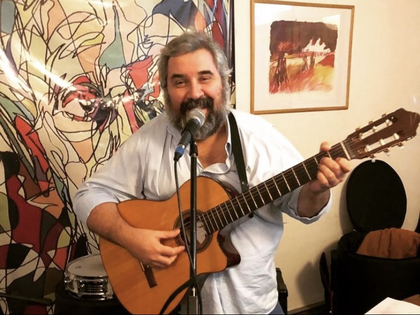
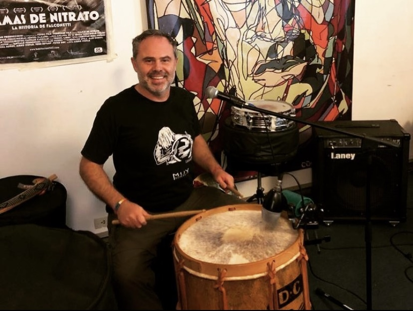

Bienvenidos !!!
Nosotros somos... "Los del Rio Folklore"

Marcelo Silva (Guitarra y Voz principal)
El "Gran Maestro Silva", concertista de Guitarra, espacializado en estilos tradicionales. Su voz personaliza el sonido de Los del Rio Folklore.

Juan Lastiri (Guitarra)
Multinstrumentista y Productor Musical. Su instrumento principal es la Guitarra electrica y criolla, pieza clave para los punteos que acompañan la rítmica.

Martiniano Acuñas (Bajo elécrico)
Estudiante avanzado de música, agrega un "toque urbano" a la rítmica tradicional del Folkore con la sonoridad del bajo eléctrico y pedales de efectos.

Damian Cattaneo (Bombo Leguero)
Brinda el sonido típico y autóctono del Folkore con el Bombo Leguero. Suma en cada presentación una acústica personal con el uso de elementos de percusión.